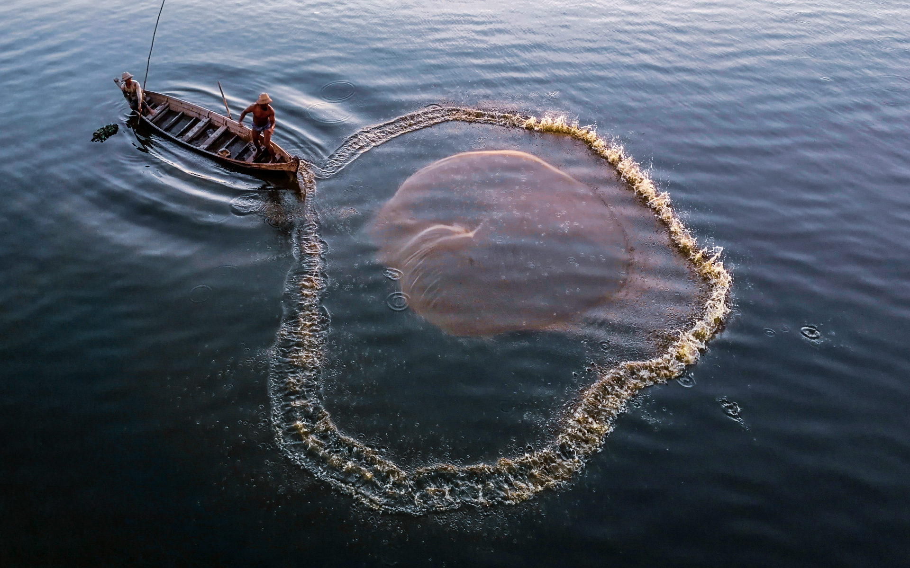
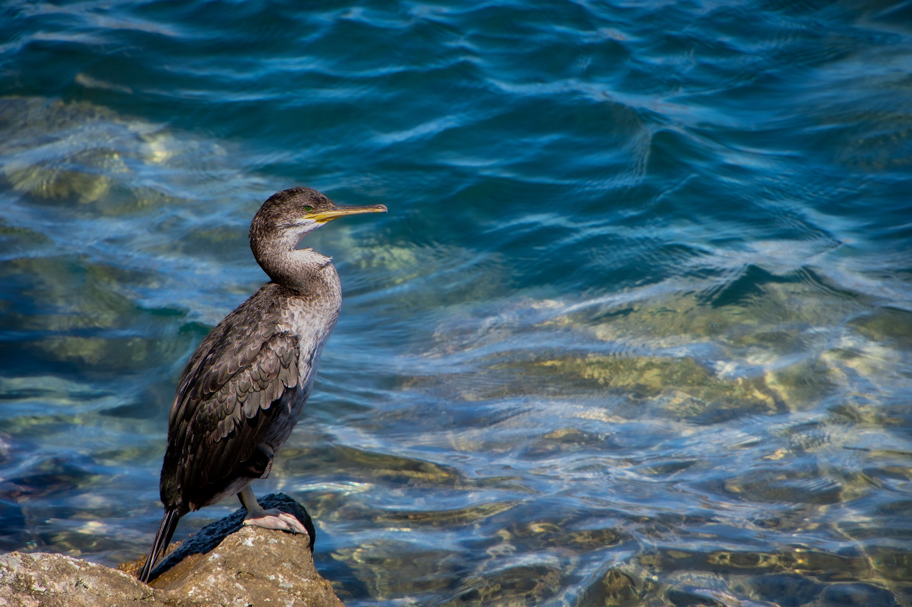

1: HUMANS ARE DESTROYING OCEANS--Human activities, like overfishing and pollution, are rapidly deteriorating our oceans. Climate change exacerbates these issues, posing a severe threat to marine life and ecosystems. Urgent global efforts are essential to mitigate these destructive impacts and protect our oceans.
.jpg)
Conservation: Promoting sustainable practices and reducing pollution are essential for preserving our planet's health. Climate Action: Mitigating climate change impacts through collective efforts ensures a more sustainable and resilient future. Global Collaboration: Fostering international cooperation is crucial for addressing environmental challenges and achieving sustainable development goals.
.jpg)
3:Advantage and Disadvantages of ocean ecosystem---Resource Harvesting: Humans benefit from the ocean's resources, such as fisheries and minerals, providing sustenance and economic opportunities. Disadvantages: 2. Overexploitation: Unregulated fishing and resource extraction can lead to overexploitation, threatening marine ecosystems and biodiversity. Pollution Impact: Human activities contribute to ocean pollution through waste disposal and industrial runoff, harming marine life and ecosystems.

4:As excess debris in the ocean slowly degrades over many years, it uses oxygen to do so, resulting in less oxygen in the ocean. Low levels of oxygen in the ocean lead to the death of ocean animals such as penguins, dolphins, whales and sharks. Excess nitrogen and phosphorus in seawater also cause oxygen depletion.